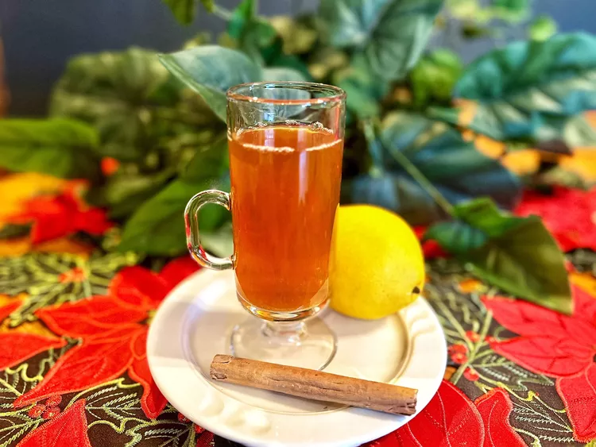

Te de Canela

Description
I have been drinking te de canela, or cinnamon tea, since I was a kid. My
mother always made it for us when we had a sore throat, a fever or just
because. This cinnamon tea can be sweetened with honey, sugar, or
piloncillo, which is Mexican brown sugar, and we often added a squeeze of
fresh lemon juice. As adults the tea is spiked with pure cane alcohol,
which is very common amongst Hispanic people.
Ingredients
- 1 1/2 cups water
- 1 1/2 sticks Ceylon cinnamon, broken into pieces
-
choice of sweetener, such as honey, sugar, or piloncillo (optional)
- 1/2 teaspoon lemon juice, or as needed (optional)
Steps
-
Place water and cinnamon sticks in a pot and bring to a boil. Reduce
heat and simmer for 10 minutes. Strain tea and pour into a cup; add
sweetener and lemon juice as desired.